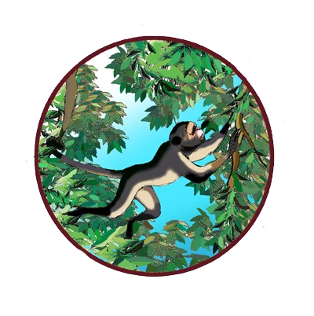
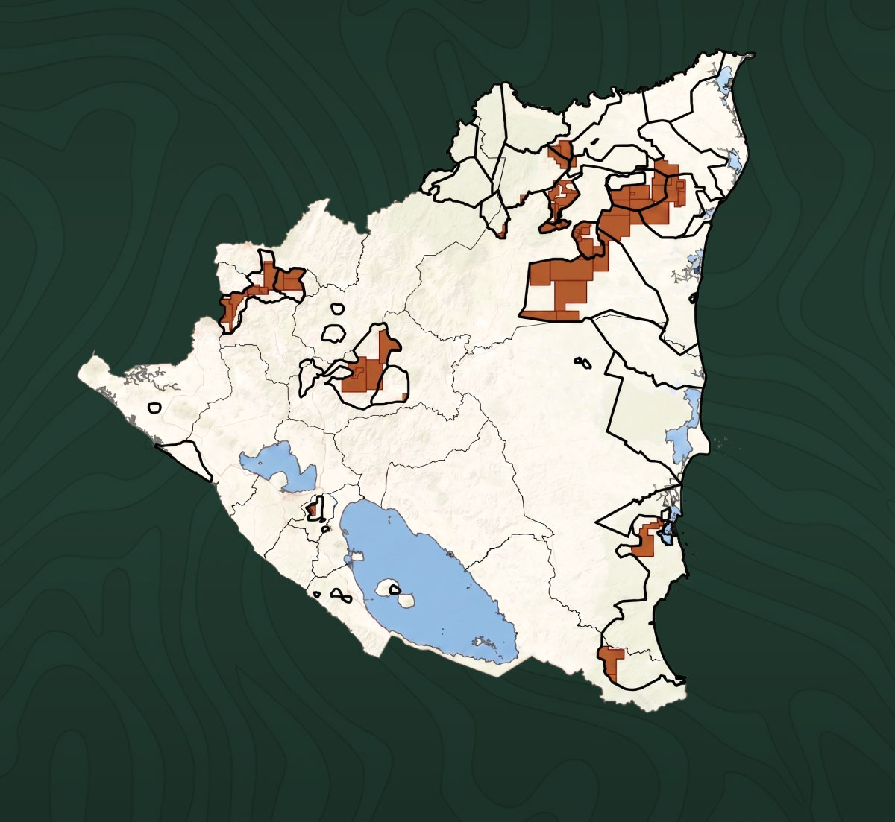

Concesiones mineras en áreas protegidas de Nicaragua


Esta segunda parte documenta las concesiones mineras otorgadas dentro de áreas protegidas de Nicaragua: reservas naturales, reservas biológicas, refugios de vida silvestre y humedales de importancia internacional, con la superficie concesionada, el origen del capital y los ecosistemas en riesgo en cada una.
Esta segunda parte del Atlas identifica 18 áreas protegidas con concesiones mineras otorgadas dentro de sus límites, con una superficie concesionada de 154,634.42 hectáreas.
En tres de ellas la concesión cubre más del 90% del área: la Reserva de Recursos Genéticos Yucul y la Reserva Natural Salto Río Yasika están concesionadas en su totalidad, y Cerro Apante en un 94.73%. Le siguen Cerro Guabule (71.14%) y Yulu (66.64%).
Varias de estas áreas se superponen con los territorios indígenas y afrodescendientes documentados en la Parte I. Por eso algunas concesiones aparecen en ambas partes y sus totales no deben sumarse.